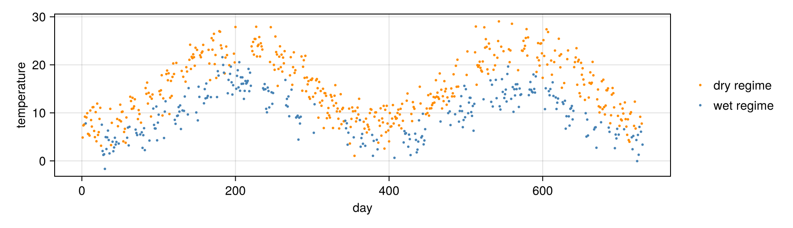
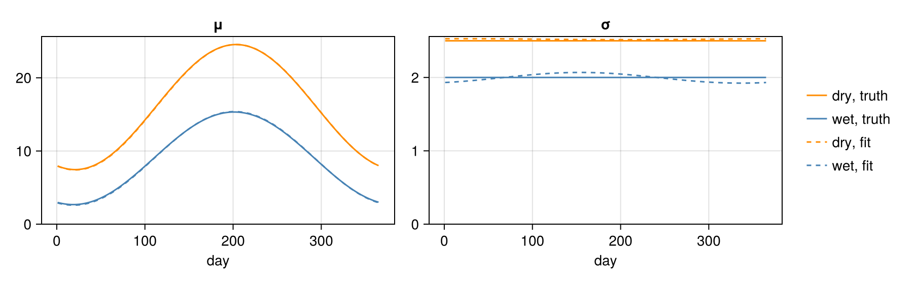
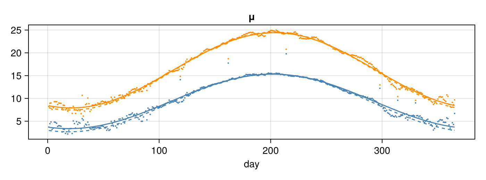
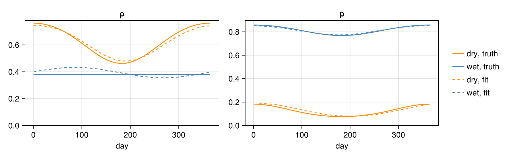
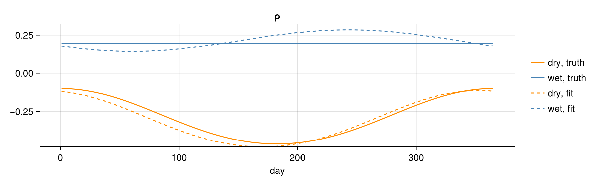

Hidden Markov model with any emission
SmoothPeriodicHMM is a hidden Markov model whose emission in each hidden state is any Distributions.jl law, with parameters that vary smoothly along the cycle.
We observe a sequence $Y_1, \dots, Y_N$ of vectors of $\mathbb{R}^D$; in the first example $D = 1$, a single real series. Step $n$ falls at period index $t_n \in \{1, \dots, T\}$ of a cycle of $T$ steps (n2t[n], see the data layout). The law of $Y_n$ depends on $t_n$ and on a hidden state $Z_n \in \{1, \dots, K\}$, a Markov chain whose transition probabilities also depend on $t_n$:
\[\mathbb{P}(Z_1 = k) = a_k, \qquad \mathbb{P}(Z_{n+1} = l \mid Z_n = k) = A_{kl}(t_n), \qquad Y_n \mid Z_n = k \ \sim\ f\big(\,\cdot\,;\ \theta_k(t_n)\big).\]
Given the hidden states, the $Y_n$ are independent: the model has no memory. Here
- $a = (a_1, \dots, a_K)$ is the initial distribution of the hidden states;
- $A(t)$ is the $K \times K$ transition matrix used when leaving period index $t$, its rows summing to 1;
- $f(\,\cdot\,; \theta)$ is the emission law, here a normal law of mean $\mu$ and standard deviation $\sigma$, $\theta = (\mu, \sigma)$;
- $\theta_k(t) = \big(\mu_k(t), \sigma_k(t)\big)$ is its parameter in state $k$ at period index $t$.
Each curve is a trigonometric polynomial of degree $d$ (any other basis can replace it),
\[P(t) = c_0 + \sum_{\ell=1}^{d} \left( c_{2\ell-1} \cos\frac{2\pi \ell t}{T} + c_{2\ell} \sin\frac{2\pi \ell t}{T} \right),\]
pushed through a link that keeps it in its domain. The transitions go through a softmax, as in the HMM tutorial, with one polynomial $P^A_{kl}$ for each $k \in \{1, \dots, K\}$ and $1 \le l < K$, state $K$ being the reference, $P^A_{kK} = 0$. The mean goes through the identity and the standard deviation through a log, one polynomial $P^\mu_k$ and $P^\sigma_k$ per state:
\[A_{kl}(t) = \frac{e^{P^A_{kl}(t)}}{\sum_{l'=1}^{K} e^{P^A_{kl'}(t)}}, \qquad \mu_k(t) = P^\mu_k(t), \qquad \sigma_k(t) = \exp\big(P^\sigma_k(t)\big), \qquad k, l \in \{1, \dots, K\}.\]
As a toy example, take daily temperatures at one station over twenty years, in two states: a dry and a wet weather regime. The data are simulated.
using SmoothPeriodicStatsModelsusing Optimization, SimpleNonlinearSolve # loads the fitting routinesusing OptimizationOptimJL # the optimization algorithm, LBFGSusing Distributions, Random, Statisticsusing CairoMakiesolver = LBFGS() # every fit below takes its optimization algorithm explicitlyLBFGS{Nothing, LineSearches.InitialStatic{Float64}, LineSearches.HagerZhang{Float64, Base.RefValue{Bool}}, Returns{Nothing}}(10, LineSearches.InitialStatic{Float64}(1.0, false), LineSearches.HagerZhang{Float64, Base.RefValue{Bool}}(0.1, 0.9, Inf, 5.0, 1.0e-6, 0.6666666666666666, 50, 0.1, 0, Base.RefValue{Bool}(false), nothing, false), nothing, Returns{Nothing}(nothing), Optim.Flat(), true)One series
SmoothPeriodicHMM(families, a, θᴬ, θᴮ, T) builds the model from its coefficients:
families, one per block of rows of the observations: here one row, aNormalwhose parameters are trigonometric polynomials of degree 1, writtenNormal => 1;θᴬ[k, l, :], the coefficients of the transition from $k$ to $l$, state $K$ being the reference of the softmax;θᴮ[k, b], the coefficients of block $b$ in state $k$: those of $P^\mu_k$, then those of $P^\sigma_k$.
T, K = 365, 2θᴬ = zeros(K, K - 1, 3)θᴬ[1, 1, :] = [1.5, 0.5, 0.0] # dry → dry: high probability, highest in winterθᴬ[2, 1, :] = [-1.0, 0.0, 0.3] # wet → dryθᴮ = reshape([ [16.0, -8.0, -3.0, log(2.5), 0.0, 0.0], # dry: μ(t) = 16 - 8cos(2πt/T) - 3sin(2πt/T), σ = 2.5 [9.0, -6.0, -2.0, log(2.0), 0.0, 0.0], # wet ], K, 1)truth = SmoothPeriodicHMM([Normal => 1], [0.5, 0.5], θᴬ, θᴮ, T)SmoothPeriodicHMM: 2 states, 1 row, period 365
transitions ConstantBasis() + FourierBasis(365, 1), 6 coefficients
row 1 Distributions.Normal, 6 coefficients per staterand(m, n2t; seq = true) returns the state path and the D × N observations, here 1 × N.
Random.seed!(1)years = 20n2t = n_to_t(years * T, T)z, Y = rand(truth, n2t; seq=true)y = vec(Y)begin fig = Figure(size=(900, 260)) ax = Axis(fig[1, 1], xlabel="day", ylabel="temperature") for (k, label, color) in ((1, "dry regime", :darkorange), (2, "wet regime", :steelblue)) days = findall(==(k), z[1:2T]) scatter!(ax, days, y[days]; markersize=4, color, label) end Legend(fig[1, 2], ax, framevisible=false) figend
Fit
fit_mle(m, y; solver, n2t) runs the Baum–Welch algorithm from the coefficients of m. The start SmoothPeriodicHMM(Normal, K, d, T; init) has flat curves, a starting (μ, σ) per state and uniform transitions; the states must start apart. Here the dry state starts at a mean of 15 and the wet one at 8, on either side of the mean temperature of the data, about 13. Starting values gives the rule for every family.
m0 = SmoothPeriodicHMM(Normal, K, 1, T; init=[(μ=15.0, σ=3.0), (μ=8.0, σ=3.0)])m, history = fit_mle(m0, y; solver, n2t)historyFitHistory: converged in 40 iterations, loglikelihood -19391.7418curve(m, :μ) is the K × T matrix of means, one row per state, and curve(m, :σ) that of the standard deviations.
function plot_curves(models, labels, names) fig = Figure(size=(900, 280)) for (i, name) in enumerate(names) cs = [curve(mod, name) for mod in models] ax = Axis(fig[1, i], title=string(name), xlabel="day", limits=(nothing, (min(0, minimum(minimum, cs)), nothing))) for (c, label, style) in zip(cs, labels, (:solid, :dash)) lines!(ax, 1:T, c[1, :]; color=:darkorange, linestyle=style, label="dry, " * label) lines!(ax, 1:T, c[2, :]; color=:steelblue, linestyle=style, label="wet, " * label) end i == length(names) && Legend(fig[1, i+1], ax, framevisible=false) end return figendplot_curves([truth, m], ["truth", "fit"], (:μ, :σ))
emission_coefs(m, k, b) holds the coefficients of block b in state k, and parameters(m).A the transition coefficients. The dry state, against the truth:
(fit=round.(emission_coefs(m, 1, 1); digits=2), truth=θᴮ[1, 1])(fit = [15.98, -8.0, -3.05, 0.92, 0.0, 0.0], truth = [16.0, -8.0, -3.0, 0.9162907318741551, 0.0, 0.0])viterbi(m, y; n2t) is the most likely state path:
mean(viterbi(m, y; n2t) .== z)0.9515068493150685A starting point from the data
The fit above started from a guess that knew roughly where each state sits. Without such knowledge, fit_mle_all_slices builds a start from the data, as the slice method does for the Bernoulli HMMs. At each period index t it fits a mixture of the K emission laws to the observations of a window around t, here eleven days, ignoring the dynamics. The states are put in the same order at every t, by default by decreasing mean of the first row, so state 1 is the warm one all year. The estimates are then smoothed into the bases of the model, and the transition coefficients are fitted to the steps between the most likely states.
The model it is given sets the structure, and its laws are one of the starts of each mixture. Here it knows nothing, with two states one degree apart:
blind = SmoothPeriodicHMM(Normal, K, 1, T; init=[(μ=13.0, σ=5.0), (μ=12.0, σ=5.0)])m_slice, slices = fit_mle_all_slices(Xoshiro(1), blind, y; solver, n2t, Yₜ_extanted=-5:5, n_random_ini=3, slices=true)(SmoothPeriodicHMM{ComponentArrays.ComponentVector{Float64, Vector{Float64}, Tuple{ComponentArrays.Axis{(A = ViewAxis(1:6, ShapedAxis((2, 1, 3))), B = ViewAxis(7:18, Shaped1DAxis((12,))))}}}, Tuple{TimeVaryingFamily{TimeVaryingParameters.DistConstructor{Distributions.Normal}, ParamSpec{(:μ, :σ), Tuple{TimeVaryingParameters.CombinedBasis{Tuple{ConstantBasis, FourierBasis{Int64}}}, TimeVaryingParameters.CombinedBasis{Tuple{ConstantBasis, FourierBasis{Int64}}}}, Tuple{IdentityLink, LogLink}, 3}}}, PeriodicHMMDists{Float64, Tuple{Matrix{Distributions.Normal{Float64}}}, Tuple{UnitRange{Int64}}}, TimeVaryingParameters.CombinedBasis{Tuple{ConstantBasis, FourierBasis{Int64}}}, Nothing}((A = [0.8699484016950666; -0.5533070558027157;;; -0.0973538745412652; 0.23385643440724715;;; -0.17438337507305407; 0.3469699268950923], B = [16.165846462147897, -7.711822108244693, -2.9234630255485263, 0.8941768594992222, -0.04405725106749911, -0.018279220855241366, 9.353700924825157, -5.647104355336874, -1.943369241225924, 0.7645358960977366, 0.03136396019194894, 0.03187686595251368]), (TimeVaryingFamily{TimeVaryingParameters.DistConstructor{Distributions.Normal}, ParamSpec{(:μ, :σ), Tuple{TimeVaryingParameters.CombinedBasis{Tuple{ConstantBasis, FourierBasis{Int64}}}, TimeVaryingParameters.CombinedBasis{Tuple{ConstantBasis, FourierBasis{Int64}}}}, Tuple{IdentityLink, LogLink}, 3}}(Distributions.Normal, ParamSpec{(:μ, :σ), Tuple{TimeVaryingParameters.CombinedBasis{Tuple{ConstantBasis, FourierBasis{Int64}}}, TimeVaryingParameters.CombinedBasis{Tuple{ConstantBasis, FourierBasis{Int64}}}}, Tuple{IdentityLink, LogLink}, 3}((ConstantBasis() + FourierBasis(365, 1), ConstantBasis() + FourierBasis(365, 1)), (IdentityLink(), LogLink()), (1, 4, 7))),), PeriodicHMMDists{Float64, Tuple{Matrix{Distributions.Normal{Float64}}}, Tuple{UnitRange{Int64}}}([0.4982319918765265, 0.5017680081234736], [0.6834359231497277 0.31656407685027227; 0.4222575481409932 0.5777424518590067;;; 0.6827957031751701 0.31720429682482987; 0.4236894418460095 0.5763105581539906;;; 0.6821614273171536 0.3178385726828465; 0.425104827795184 0.574895172204816;;; … ;;; 0.6853901149308218 0.3146098850691781; 0.41786779672356517 0.5821322032764348;;; 0.6847333436524602 0.3152666563475398; 0.41934622231318786 0.5806537776868121;;; 0.6840818746361281 0.3159181253638718; 0.4208096414586629 0.579190358541337], (Distributions.Normal{Float64}[Normal(8.404844333298737, 2.339205844911911) Normal(8.357964065121188, 2.3385159446518706) … Normal(8.5054895538331, 2.340678355164984) Normal(8.454024353903202, 2.3399267101531036); Normal(3.6739813420442564, 2.2176407758603403) Normal(3.643049138090996, 2.2188266566695654) … Normal(3.7408851558272898, 2.2152084369578176) Normal(3.706596569488281, 2.216434572294385)],), (1:1,)), 365, ConstantBasis() + FourierBasis(365, 1), nothing, Base.RefValue{ComponentArrays.ComponentVector{Float64, Vector{Float64}, Tuple{ComponentArrays.Axis{(A = ViewAxis(1:6, ShapedAxis((2, 1, 3))), B = ViewAxis(7:18, Shaped1DAxis((12,))))}}}}((A = [0.8699484016950666; -0.5533070558027157;;; -0.0973538745412652; 0.23385643440724715;;; -0.17438337507305407; 0.3469699268950923], B = [16.165846462147897, -7.711822108244693, -2.9234630255485263, 0.8941768594992222, -0.04405725106749911, -0.018279220855241366, 9.353700924825157, -5.647104355336874, -1.943369241225924, 0.7645358960977366, 0.03136396019194894, 0.03187686595251368]))), PeriodicHMMDists{Float64, Tuple{Matrix{Distributions.Normal{Float64}}}, Tuple{UnitRange{Int64}}}([0.4982319918765265, 0.5017680081234736], [0.5384615384615384 0.46153846153846156; 0.42857142857142855 0.5714285714285714;;; 0.4 0.6; 0.5 0.5;;; 0.8888888888888888 0.11111111111111113; 0.7272727272727273 0.2727272727272727;;; … ;;; 0.75 0.25; 0.625 0.375;;; 1.586032892321652e-17 1.0; 3.700743415417188e-17 1.0;;; 0.5 0.5; 0.6842105263157895 0.3157894736842105], (Distributions.Normal{Float64}[Normal(8.246502152988738, 2.6221742319441224) Normal(8.931284993715774, 2.33349148959613) … Normal(8.625427955912615, 2.7286117731532613) Normal(9.679700054134415, 1.5673445470578204); Normal(3.7114133262131697, 2.0111811099718016) Normal(4.453830723447777, 2.4742058189005705) … Normal(4.269727374935251, 2.213231588594619) Normal(6.698348128307721, 3.2304606482098737)],), (1:1,)))slices = true also returns the estimates at each period index, as a PeriodicHMMDists. The dots are those estimates, the lines the smooth start, and the dashed lines the truth:
begin fig = Figure(size=(700, 260)) ax = Axis(fig[1, 1], title="μ", xlabel="day") for (k, color) in zip(1:K, (:darkorange, :steelblue)) scatter!(ax, 1:T, mean.(slices.B[1][k, :]); color, markersize=3) lines!(ax, 1:T, curve(m_slice, :μ)[k, :]; color) lines!(ax, 1:T, curve(truth, :μ)[k, :]; color, linestyle=:dash) end figend
The transitions of such a start are rough: they are counted between the most likely states of fits that ignore the dynamics, so an observation given to the wrong state counts as two switches, and the states look less persistent than they are. Baum–Welch corrects that. From this start, against the fit from the guess:
m_from_slices, history_slices = fit_mle(m_slice, y; solver, n2t)(from_guess=(loglikelihood=loglikelihood(history), iterations=history.iterations), from_slices=(loglikelihood=loglikelihood(history_slices), iterations=history_slices.iterations))(from_guess = (loglikelihood = -19391.741779388074, iterations = 40), from_slices = (loglikelihood = -19391.12415532866, iterations = 27))Several series in blocks
The observations can have several rows, split into blocks: each family covers one row if its law is univariate, several if it is multivariate. Given the state, the blocks are independent: with $Y_{b,n}$ the rows of block $b$ at step $n$, the law of $Y_n$ given $Z_n = k$ has density
\[y \mapsto \prod_{b} f_b\big(y_b;\ \theta_{kb}(t_n)\big),\]
where $f_b$ is the law of block $b$ and $\theta_{kb}(t)$ its parameter in state $k$ at period index $t$. A multivariate law fits as long as each of its parameters is a scalar. Here $D = 3$: the daily minimum and maximum temperatures $Y_{1,n}$ and $Y_{2,n}$ follow a bivariate normal law whose correlation $\rho_k(t) \in (-1, 1)$ varies over the year, and rain occurrence $Y_{3,n} \in \{0, 1\}$ a Bernoulli law of probability $p_k(t)$:
\[\begin{pmatrix} Y_{1,n} \\ Y_{2,n} \end{pmatrix} \Bigm| Z_n = k \sim \mathcal{N}\left(\begin{pmatrix} \mu^{\min}_k \\ \mu^{\max}_k \end{pmatrix}, \begin{pmatrix} (\sigma^{\min}_k)^2 & \rho_k\,\sigma^{\min}_k\sigma^{\max}_k \\ \rho_k\,\sigma^{\min}_k\sigma^{\max}_k & (\sigma^{\max}_k)^2 \end{pmatrix}\right), \qquad Y_{3,n} \mid Z_n = k \sim \operatorname{Bernoulli}(p_k),\]
every parameter being evaluated at $t_n$.
A family not declared by seasonal_family is a TimeVaryingFamily: a function that builds the law from its parameters, and a ParamSpec giving each parameter a basis and a link. IntervalLink(-1, 1) keeps $\rho$ in $(-1, 1)$.
b = TrigBasis(T, 1)bivariate = TimeVaryingFamily( (μmin, μmax, σmin, σmax, ρ) -> MvNormal([μmin, μmax], [σmin^2 ρ*σmin*σmax; ρ*σmin*σmax σmax^2]), ParamSpec(μmin=b => IdentityLink(), μmax=b => IdentityLink(), σmin=b => LogLink(), σmax=b => LogLink(), ρ=b => IntervalLink(-1, 1)))families = [bivariate, Bernoulli => 1]2-element Vector{Any}:
TimeVaryingFamily{Main.var"Main".var"#3#4", ParamSpec{(:μmin, :μmax, :σmin, :σmax, :ρ), NTuple{5, TimeVaryingParameters.CombinedBasis{Tuple{ConstantBasis, FourierBasis{Int64}}}}, Tuple{IdentityLink, IdentityLink, LogLink, LogLink, IntervalLink{Int64}}, 6}}(Main.var"Main".var"#3#4"(), ParamSpec{(:μmin, :μmax, :σmin, :σmax, :ρ), NTuple{5, TimeVaryingParameters.CombinedBasis{Tuple{ConstantBasis, FourierBasis{Int64}}}}, Tuple{IdentityLink, IdentityLink, LogLink, LogLink, IntervalLink{Int64}}, 6}((ConstantBasis() + FourierBasis(365, 1), ConstantBasis() + FourierBasis(365, 1), ConstantBasis() + FourierBasis(365, 1), ConstantBasis() + FourierBasis(365, 1), ConstantBasis() + FourierBasis(365, 1)), (IdentityLink(), IdentityLink(), LogLink(), LogLink(), IntervalLink(-1, 1)), (1, 4, 7, 10, 13, 16)))
Distributions.Bernoulli => 1The coefficients of each block follow the order of its parameters. For $\rho$, the coefficients are those of $P^\rho_k$, with $\rho_k(t) = 2\operatorname{logistic}(P^\rho_k(t)) - 1$; for $p$, $p_k(t) = \operatorname{logistic}(P^p_k(t))$.
θᴮ₂ = Matrix{Vector{Float64}}(undef, K, 2)θᴮ₂[1, 1] = [8, -6, -2, 20, -9, -3, log(3), 0, 0, log(3.5), 0, 0, 1.5, 0.5, 0] # dryθᴮ₂[2, 1] = [7, -5, -2, 14, -7, -2, log(2.5), 0, 0, log(2.5), 0, 0, 0.8, 0, 0] # wetθᴮ₂[1, 2] = [-2.0, 0.5, 0.0] # dry: rain is rareθᴮ₂[2, 2] = [1.5, 0.3, 0.0] # wet: rain is frequenttruth₂ = SmoothPeriodicHMM(families, [0.5, 0.5], θᴬ, θᴮ₂, T)SmoothPeriodicHMM: 2 states, 3 rows, period 365
transitions ConstantBasis() + FourierBasis(365, 1), 6 coefficients
rows 1:2 law of (μmin, μmax, σmin, σmax, ρ), 15 coefficients per state
row 3 Distributions.Bernoulli, 3 coefficients per stateThe observations are 3 × N: rows 1 and 2 for the temperatures, row 3 for rain.
z₂, Y₂ = rand(truth₂, n2t; seq=true)Y₂[:, 1:5]3×5 Matrix{Float64}:
1.07843 -0.815332 2.34607 6.47509 0.388525
9.14185 6.63244 13.9371 14.389 5.54958
0.0 0.0 1.0 0.0 1.0The start gives each state one starting value per block: a NamedTuple for the bivariate law, a probability for rain.
m0₂ = SmoothPeriodicHMM(families, K, T; init=[[(μmin=10.0, μmax=20.0, σmin=3.0, σmax=3.0, ρ=0.5), 0.2], [(μmin=8.0, μmax=14.0, σmin=3.0, σmax=3.0, ρ=0.5), 0.7]])m₂, history₂ = fit_mle(m0₂, Y₂; solver, n2t)history₂FitHistory: converged in 27 iterations, loglikelihood -40400.7788plot_curves([truth₂, m₂], ["truth", "fit"], (:ρ, :p))
Decoding works as for one series:
mean(viterbi(m₂, Y₂; n2t) .== z₂)0.9408219178082192PeriodicHMMDists(m) is the evaluated model: a, the transition matrices A[:, :, t], and B[b][k, t], the law of block b in state k at period index t. The bivariate law of the dry state on day 30:
PeriodicHMMDists(m₂).B[1][1, 30]Multivariate normal distribution
Parameters:
μ = [1.9135289980717811, 10.853127458278271]
Σ = [9.206196966414648 7.82836692218454; 7.82836692218454 12.278136937780635]Dependence from a copula
A copula separates the marginal laws of a random vector from their dependence. By Sklar's theorem, any joint law of $(X_1, X_2)$ with continuous marginal cdfs $F_1$ and $F_2$ is
\[\mathbb{P}(X_1 \le x_1,\ X_2 \le x_2) = C\big(F_1(x_1),\ F_2(x_2)\big),\]
where the copula $C$ is a joint cdf on $[0, 1]^2$ with uniform marginals. The bivariate normal law above is the Gaussian copula with normal marginals; any marginals can be paired instead. Copulas.jl builds such a law as SklarDist(C, (law₁, law₂)), an ordinary multivariate Distribution, so it can be a block like any other.
As a proof of concept, take $D = 2$: a temperature $Y_{1,n}$, normal of mean $\mu_k$ and standard deviation $\sigma_k$, and a wind speed $Y_{2,n}$, exponential of mean $\lambda_k$, joined in each state by a Gaussian copula $C_\rho$ of correlation $\rho_k$:
\[\mathbb{P}(Y_{1,n} \le x_1,\ Y_{2,n} \le x_2 \mid Z_n = k) = C_{\rho_k}\big(F_{\mathcal{N}(\mu_k,\, \sigma_k)}(x_1),\ F_{\mathcal{E}(\lambda_k)}(x_2)\big),\]
where $F_{\mathcal{N}(\mu, \sigma)}$ and $F_{\mathcal{E}(\lambda)}$ are the normal and exponential cdfs, every parameter being evaluated at $t_n$. Each parameter has its own basis: the mean wind speed is constant, a trigonometric polynomial of degree 0.
using Copulascopula_law = TimeVaryingFamily( (μ, σ, λ, ρ) -> SklarDist(GaussianCopula(2, ρ), (Normal(μ, σ), Exponential(λ))), ParamSpec(μ=b => IdentityLink(), σ=b => LogLink(), λ=TrigBasis(T, 0) => LogLink(), ρ=b => IntervalLink(-1, 1)))θᴮ₃ = reshape([ [16, -8, -3, log(2.5), 0, 0, log(3.0), -0.6, 0.4, 0], # dry: calm, the warmer the calmer [9, -6, -2, log(2.0), 0, 0, log(5.0), 0.4, 0, 0], # wet: windy ], K, 1)truth₃ = SmoothPeriodicHMM([copula_law], [0.5, 0.5], θᴬ, θᴮ₃, T)SmoothPeriodicHMM: 2 states, 2 rows, period 365
transitions ConstantBasis() + FourierBasis(365, 1), 6 coefficients
rows 1:2 law of (μ, σ, λ, ρ), 10 coefficients per stateTen years of data, then the fit from flat curves:
n2t₃ = n_to_t(10T, T)z₃, Y₃ = rand(truth₃, n2t₃; seq=true)m0₃ = SmoothPeriodicHMM([copula_law], K, T; init=[(μ=15.0, σ=3.0, λ=3.0, ρ=0.0), (μ=8.0, σ=3.0, λ=4.0, ρ=0.0)])m₃, history₃ = fit_mle(m0₃, Y₃; solver, n2t=n2t₃)history₃FitHistory: converged in 28 iterations, loglikelihood -17942.1718plot_curves([truth₃, m₃], ["truth", "fit"], (:ρ,))
The density of a copula law goes through the marginal cdfs, so the fit differentiates them. ForwardDiff does for Normal, Exponential, Weibull and LogNormal, but not for the Gamma cdf in its shape: with such a marginal, pass adtype = AutoFiniteDiff() to fit_mle, after import FiniteDiff. The parameters of the copula are scalars too, for example one correlation in GaussianCopula(d, ρ). An observation that every state finds impossible stops the fit unless robust = true; the fitting guide says what that does.
loglikelihood, fit(SeasonalFit, …) for model selection, several sequences and the functions of HiddenMarkovModels.jl work as for the other HMMs; see the fitting guide and the HiddenMarkovModels.jl guide.
This page was generated using Literate.jl.